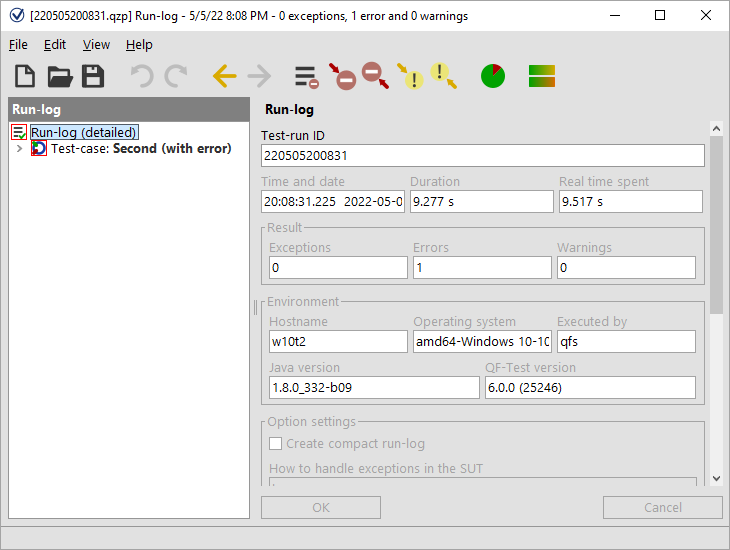
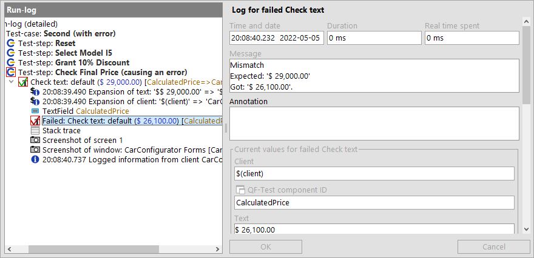
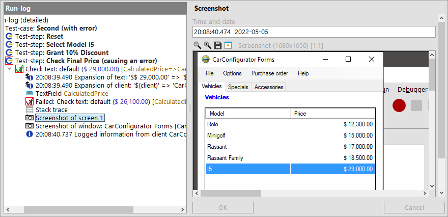

| Version 6.0.3 |
QF-Test logs detailed information for every test execution.
or in case you have already closed the dialog
NoteThe most recent run-logs are also listed at the bottom of the Run menu of the main window.
The run-log comes up in a separate window displaying the logged actions of the test-case you've just executed:
|
|  | ||
|
| Figure 19.12: Run-Log for the second test-case | ||
The run-log reflects the tree structure of the test-suite view you are already familiar with. When you click on one of the nodes on the left side, the properties of the event including time stamp and duration will be displayed on the right.
In the tree left you will notice nodes surrounded by a red border. These are indicators showing where a problem occurred in a child-node. If you keep expanding the red nodes, you'll eventually come to the actual error node.
All nodes with red highlighting have been expanded and the actual error node has been selected:
|
|  | ||
|
| Figure 19.13: Error in the second test-case | ||
The error message on the right says that the expected value of the final price field differs from the actual one. Of course this error is there by intention as the second test-case is supposed to show us how to analyze an error.
Another helper for error analysis is the Screenshot of the SUT taken at the time when the error occurred (four nodes down from the red node). Being able to see the state of the SUT at that moment often proves useful for determining the cause of the error. The following image shows a screenshot node:
|
|  | ||
|
| Figure 19.14: Screenshot node showing the error situation | ||
In addition to screenshots of all monitors, QF-Test also saved images of the client windows at the time of the error. This allows you to analyze the contents even if they are covered by other dialogs or windows.
NoteThe information gathered in a long test-run accumulates and can
eat up enormous amounts of memory. This is the reason why QF-Test is configured by default
to create a compact run-log, keeping only the relevant information for report generation
and error diagnosis.
This functionality can be configured via the option
"Create compact run-log" within »Edit«-»Options«-»Run-logs«-»Content«. The root node of the
run-log tells you whether it is a compact or detailed run-log.
You can also configure the number of screenshots to be saved.
| Last update: 9/6/2022 Copyright © 2002-2022 Quality First Software GmbH |